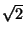

In rather more detail, an Algorithm is a finite and definite procedure for solving a problem. The finiteness is important; we cannot accept as algorithms methods which, for example, involve us in taking limits unless we have available a finite procedure for evaluating those limits. The definiteness is also important. We cannot accept as algorithms methods which involve making inspired guesses, like finding a clever substitution for an integral.
You may already have met the word algorithm in the context of Euclid's Algorithm for the calculation of the highest common factor of two integers. This is indeed an algorithm in our sense of the word. Let me write it down in the form of a procedure, using the kind of semi- formal language that we will normally adopt for describing algorithms.
On the other hand, the problem of finding the decimal representation of  cannot be solved by an algorithm, so far as we know, because there are infinitely many decimal digits to be found and they cannot be described `finitely' because they neither repeat nor follow a clear pattern. The problem of finding a specified finite number of the decimal digits of is an algorithmic problem.
What is involved in the study of algorithms? Firstly, of course, there is the problem of actually finding algorithms to solve important problems. In addition there is the problem of evaluating those algorithms. Are they good or bad? Could we expect to do better by studying the problem further?
The usual measure of quality of an algorithm is its speed -- does it do its job efficiently? Other significant criteria are: does it require a lot of computer space, is it easy to generalise, is it simple and logical and consequently easy to program without error?
Euclid's Algorithm is an example of a very good algorithm. It is undoubtedly a simple algorithm. It does not require much adjustment to cover all integers rather than just positive ones. It turns out that it is almost the quickest known way to solve the problem. Compare it, for example, with the equally correct method which starts with the lesser of n and m and successively reduces it by 1 until it divides both n and m. It would be a good first exercise for you to program these two methods and then compare their running times when required to find the h.c.f. of two six digit numbers.